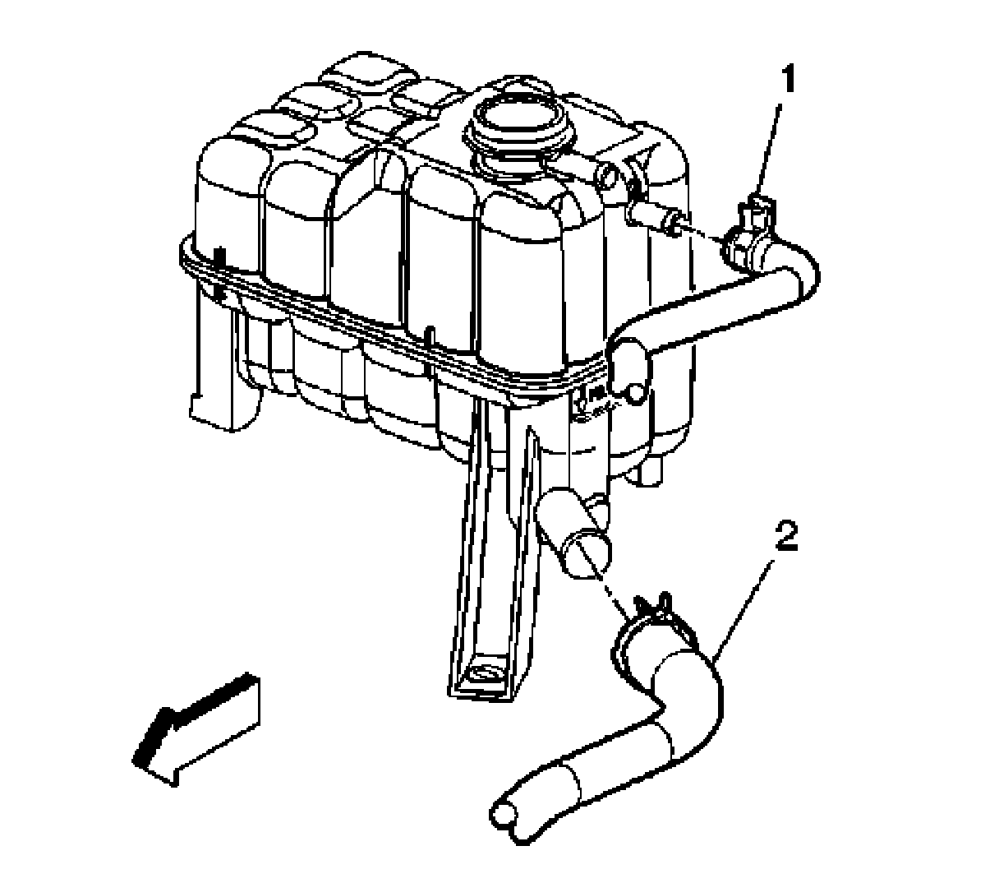

Radiator Surge Tank Inlet Hose/Pipe Replacement
Radiator Surge Tank Inlet Hose/Pipe Replacement
Removal Procedure
1. Drain the cooling system. Refer to Draining and Filling Cooling System (Vac-N-Fill).
2. Reposition the surge tank inlet hose clamp from the radiator.
3. Remove the surge tank inlet hose from the radiator.

4. Reposition the surge tank inlet hose clamp at the surge tank.
5. Remove the surge tank inlet hose (1) from the surge tank.
Installation Procedure
1. Install the surge tank inlet hose (1) to the surge tank.
2. Position the surge tank inlet hose clamp to the surge tank.
3. Install the surge tank inlet hose to the radiator.
4. Position the surge tank inlet hose clamp to the radiator.
5. Fill the cooling system. Refer to Draining and Filling Cooling System (Vac-N-Fill).